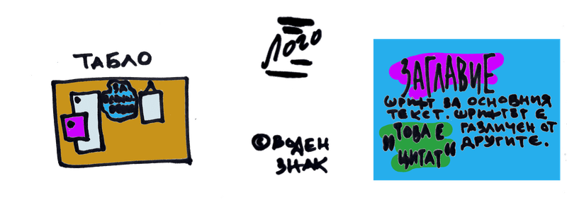

БРАНДИНГ
Визуална идентичност
Големите марки имат стотици страници, обясняващи как трябва да изписва името им, какви цветове да се ползват и какви шрифтове. Всичко това е събрано в така наречените style guide, или още brand book, където са засегнати допълнително тон, мърчандайзинг и прочие.
Дори и едва да започвате е добре да обърнете внимание на облика ви, защото изразява ценностите ви, настроението и тона ви. Освен това привлича правилните хора (и обезкуражава тези, които ще ви загубят времето).
Визуалният ви бранд служи, за да отговори на въпроса как ви познават, ако имате само няколко секунди независимо дали на улицата или в емисията на Facebook, Twitter или други информационни потоци. Дали ви познават по начина, по който изписвате собственото си името, на фирмата или събитието си, дали са цветове, линиите или шрифтове, дали са провокативните или успокояващи снимки. Какво ви отличава на пръв поглед и как го изразявате?
Колкото и да го избягваме, днес сме заобиколени от хиляди изображения и марки. Затова брандът ни трябва преди всичко да е забележителен. Трябва също да е еднакъв и разпознаваем навсякъде: на уебсайта ви, в социалните мрежи, върху визитни картички, фактури и т.н.
Дизайн
Да изграждаме дизайна си може да започне от описание какъв искаме да бъде: изискан, естествен, смел или забавен, модерен или класически. Кой стил в архитектурата, модата или изкуството се доближава максимално до търсения ефект?
Ако не сте сигурни, помислете кои са общите елементи на изображенията, които ви харесват или ви хващат окото. Запазвайте си изрезки или файлове в продължение на две-три седмици да кажем и си направете табло за вдъхновение, за която ще ви обясня след момент.
При създаването на бранда ви, решете каква нагласа или какво настроение се стремите да създадете. Ретро или модерно? Спокойно или смело? Естествено или стилизирано? Подредено или хаотично?
След това, помислете как да го постигнете. Цветовете са едни от най- верните ви и въздействащи оръжия.
Но в интернет, 90% от дизайна се състои от текст или така наречената типография.
Линиите, както би ви казал великия художник Кандински също имат свое значение: геометричните форми носят грубост, но и стабилност и сила, подобно на някои линии, а кривите- загатват елегантност, лекота и нюанс.
Освен за обектите, елементите и формите, вземете под внимание и как да им придадете триизмерност чрез сенки, черти и разстояния.
Също, изглежда ни маловажно и често се забравя, но бялото пространство позволява да се възприеме по- лесно представяното. Позволява на дизайна ви да диша. Това не са задължително бели петна, а разстояние между различните елементи сред които снимки, редове и параграфи.
Табло за вдъхновение
Таблото за вдъхновение (moodboard) може да е обикновена коркова дъска, от онези където може да си забучвате листчета и снимки с кабърчета. Може и да е виртуална, направена в Canva, Photoshop или друг инструмент за обработка на снимки; дори става екстра в Pinerest. Там може да сложите снимки, изображения, текстури, мотиви, образци, цитати, идеи за идентичност, настроение и реклама, които сте срещнали независимо дали са от вашата област или просто са ви подействали.
Цветова комбинация
Цветовете са един от елементите на визуалната идентичност, които влияят най- много на възприятията ни, защото са свързани с елементи от околната ни среда.
Човешкият ум е закодирал значението им дълбоко и емоционално. Синьото небе означава спокойствие заради приятното време, а и че имаме водица. Червената кръв алармира, че сме ранени, а червеното плодче казва да не го ядем, защото е отровно, но пък месото също има този цвят. Жълтото е най- веселият и слънчев цвят, но не се ползва много в брандинга, защото се свързва с несериозност. Зеленото значи, че имаме тревица да хрупаме за нас и за добитъка, а природата се възражда.
По принцип, студените цветове (синьо, зелено, лилаво) успокояват, а топлите (червено, оранжево, жълто)- стимулират. Затова едните са подходящи за чакалня примерно, а другите- за призив на бутон или плакат. Но разграничението не е толкова строго: ако държите на своя си цвят, смесето го с противоположен по температура, за да получите желания ефект.
Света на бизнеса вече си има установени конвенции: червено за заведения за бързо хранене, черно за луксозни, зелено за био продукти. Имайте го предвид, тъй като при пазаруване хората търсим познати модели.
За главен цвят може да изберете и неутрални: черното говори за лукс и елегантност; бялото за изчистеност и простота; сивото става за всичко, макар че е малко пасивно; само внимавайте с кафявото, защото може да има неприятни асоциации, но принципно се среща нерядко в природата.
Използвайте наситените цветове само за акценти, бутони и други дреболии, които искате да привличат вниманието. Иначе може да натоварите прекалено зрението на публиката ви.
Какъвто и цвят да изберете, ще ви трябват непривличащо вниманието неутрални цветове като сиво, бяло и черно. Но има различни сиви нюанси: някои са топли, а други- не, някои са светли, като те не са подходящи за текст, а има и тъмни, които са за предпочитане пред чисто черното, защото то обикновено иглежда неестествено, тъй като то рядко се среща в природата.
Ако се чудите на кои цветове да се спрете, вземете ги от снимките на таблото ви. Може да си направите такава колекция в Pinterest, в програма като Sketch или тези на Adobe, дори в Canva.
Изображения
Ако поствате в Instagram или друга предимно визуална платформа, както при другите аспекти, най- важното си остава постоянството. Докато скролват в приложението, за да може брандът ви да остави впечатление в ума на следващите ви, трябва изображенията ви да са разпознаваеми моментално, да си кажат еди-кой-си поства страхотни снимки и то често.
Този ефект може да постигнете с филтри, рамки и свързан цвят.
Вече не едно и две приложения предлагат разни филтри- от сепия до наситено- цветно. Пробвайте ги, решете кой ви е любим и се вписва в посланието и имиджа на бранда, и го ползвайте при всеки сгоден случай.
Изберете си цветове като бяло (може да е изсветлено небе, паваж или дрехи), изчистено синьо като небето, или пък кафяво, ако сте брюнетка, зелено ако се занимавате със био продукти и т.н.
Друг вариант е да си имате характерна рамка, съставена от линии (хоризонтални, диагонални и вертикални), криви и завъртулки.
Вижте и дали да снимате в едър план или като панорама. Каква дистанция искате да създадете с клиентите? От професионална до интимна има цял спектър.
Също, особено ако създавате супер оригинални изображения или видео съдържание, помислете как да го защитите срещу кражба или пиратство. Обикновено това става с поставянето на така наречения воден знак или watermark. На банкнотите той може да значи, че не са фалшификат, а в документ- че е поверителен или чернова, но в дигиталното пространство най- вероятно сте ги виждали на фотоси от събития, направени от новинарска агенция.
Типография
Шрифтовете не трябва да привличат внимание, да са нечетими или да не са подходящи.
Затова дизайнерите препоръчват не повече от 3: за заглавие, за основния текст и може би за цитати, отзиви от клиенти и подобни. Например, за да има контраст добър вариант е да изберете един серифен (с ченгелче на края на буквите) и един безсерифен шрифт. Още по- добре е ако са от същото семейство, защото се предполага, че ще изглеждат добре един до друг.
В общи линии, sans serif (безсерифни) са задължително по- модерни и подходящи например за технилогични фирми, а serif (серифните) се ползват да кажем от банките или адвокатските кантори, които са отдавна установени. Скриптовите шрифтове, които напомнят на написани на ръка, не са много четими, затова се използват най- вече за акцент или за по една- две думи максимум.
Ако искате да пробвате как би изглеждала някоя фраза, пробвайте на wordmark.it или тествайте Google Fonts.
Лого
Не е задължително логото да е сложно. Може да е просто бранда, изписан с готин или интересен шрифт. (Ето и как да изберете името.)
Ако все пак желаете да положите малко усилия, постарайте се да е ясно и с подходящ размер.
За да изглежда добре смалено или уголемено, проектирайте логото във векторна програма. Така ще може да го ползвате както на билборд, така и на значка.
Също се погрижете да е правилно разположено и подравнено (както текста с графичния елемент, така и линиите); и да не намопня на неприлични неща.
Пазете файловете от проектите си. За в бъдеще ще са ви нужни няколко варианта на логото:
- с и без името или с и без какъвто и било текст, които ще ползвате на документи, визитки, сайт, фавикони (малкото квадратче горе на браузъра);
- хоризонтално и вертикално;
- черно- бяло и цветно;
- за онлайн и за печат.
Логото се пригажда още за разните социални медии, за имейл подпис, уебсайт, аватар и профилни снимки; слага се в бюлетин, за защита за снимки, на визитки, листовки, бланки за писма, опаковки, етикети, униформи, книги, бележници и химикалки.
Следователно, отдайте му необходимото внимание, но също знайте, че никоя марка, дори Кока кола не е със абсолютно същото лого от началото. Винаги може да го пипнете или да го промените съвсем.